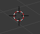
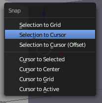

3D Cursor¶
LMB moves the 3D cursor which is used for specifying a point in 3D
space.

The 3D cursor
A common workflow is to place the 3D cursor and then snap an object to it. Sometimes, in order to place the 3D cursor we first snap it to some other object.
| Action | Description |
|---|---|
LMB |
Place the 3D cursor under the mouse cursor |
Shift-S |
Snap menu |
Exercise
- Move the 3D Cursor somewhere in the scene (
LMB) - Select the cube and snap it to the cursor (
Shift-S)

Snap menu (Shift-S)
- Snap the 3D Cursor back to the origin (
Shift-S) - Snap the cube back to the origin (
Shift-S)